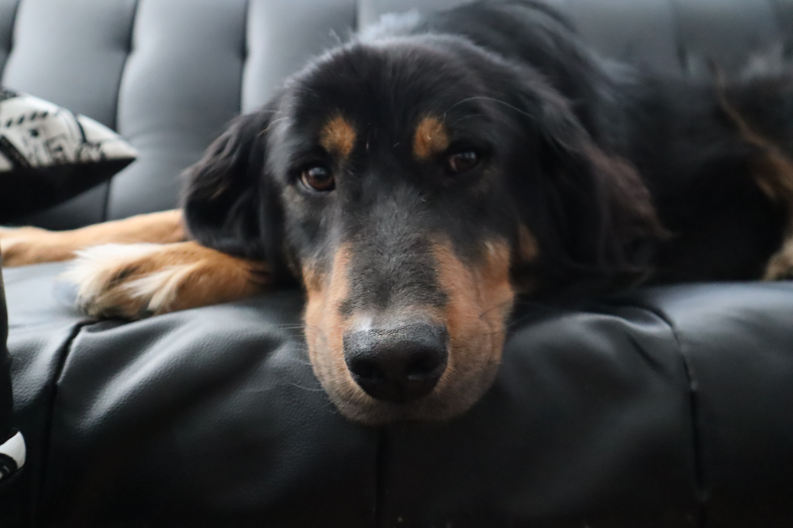

Feel the zen-like majesty of the mighty pupper.
The website for people with a strong addiction to dog loving, and the spouses, boyfriends/girlfriends who support them.

"I may look small, fluffy and adorable but I'm actually a black belt. In cuteness."
Today's Pupperoos

"Did I turn off the oven?"

"I think I saw a squirrel fall in the creek!"
"We both know I'm cute, so cough up the treats, biped."

"The black and white gives me that Marlon Brando look the neighborhood babes love. Not sure about the fence, though."
"Life without dogs is terribly boring, terribly lonely, and terribly dreary. If one must choose between dogs and cats, always choose dogs. If one must choose between a cat and nothing, I guess go for the cat." - Odin, I'm sure
"Dog loving is a serious condition. You don't have to live with it on your own. We're here to help. So while you're taking a break from all that studying, feast your eyes on some pupperoos. It will ease the pain of learning flexbox, loops, and recursion."
Copyright © DanOfTime 2022